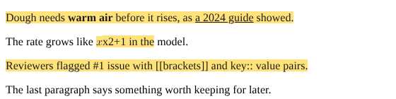
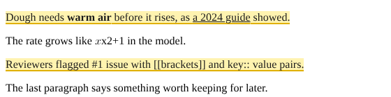
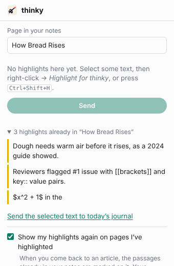

Highlights
Mark passages as you read, keep them in your notes, see them again when you come back.
What you need
- thinky on a Windows computer, with your notes folder open in it at least once.
- Edge or Chrome on that computer, with the thinky highlights extension: for Edge, for Chrome.
1. Connect thinky and the browser (once)
- In thinky, open Settings → Capture and click Set up under Highlights from your browser. This tells Edge and Chrome where thinky is on your computer.
- Click Get it for Edge or Get it for Chrome and add the extension.
- Click the puzzle-piece button next to the address bar and pin thinky highlights, so its button stays in view.
2. Highlight as you read
Select a passage, then right-click → Highlight for thinky, or press Ctrl+Shift+H. It turns yellow. Highlight as many as you like; they wait in the browser until you send them.

3. Send them to your notes
Click the extension's button (or press Alt+Shift+L), check the page name, then click Send. They go to a page of their own for that article, under today's date, each with a small ↗ link back to its spot in the article. A passage already on the page isn't added twice.
One passage straight into today's journal instead: select it, then right-click → Send to today's journal, or Alt+Shift+J. With nothing selected, nothing is sent: the extension asks you to select some text first.
4. See them again


Once: open the extension's box on an article. The passages your notes already hold for it are marked on the page and listed under “N highlights already in …”.
Every time you come back: in the box, click the gear at the top right and tick Show my highlights again on pages I've highlighted (you only do this once; it stays on). The browser asks once to let the extension see the pages you open. From then on, opening one of your articles marks its passages by itself. Untick it to stop; the permission is given back.
What the extension does with that permission: it compares each page's address with the list of articles in your notes, on your computer. On a page that isn't one of them it does nothing at all. It sends nothing anywhere except to thinky on the same computer.
On your phone
Nothing to set up. In your phone's browser, use Share → Add to journal (thinky) on an article as usual. If your notes already have passages from it, the box lists them under what you're adding, so you can see what you kept before. Tap the list to see all of them.
Phone browsers can't run this extension (Chrome on Android has no extensions, and Edge on Android offers only a short list of its own), so the marks on the article itself are a computer thing.
Good to know
- A passage is found again by its words. If the article's words changed since, or the passage is a formula (kept as TeX), it's listed but not marked.
- Pages you filed by hand count too, as long as the page has the article's address in its
source::property. Passages that start with a quick capture's time (**22:19** …) are found without it. - Quick captures still waiting in your journal count too: a passage sent with Send to today's journal (or shared from your phone) is marked before you file it, as long as its note has the article's link.
- A passage whose spacing differs a little from the article's (a missing space, two paragraphs run together) is still found.
- Nothing is changed in your notes by seeing highlights again: it only reads them.